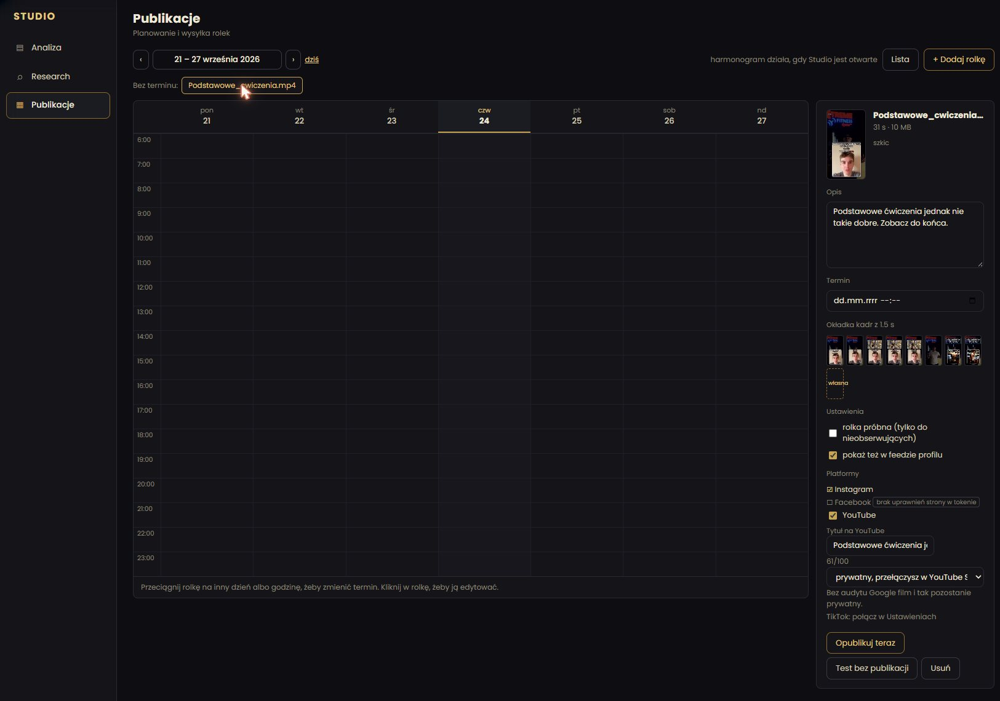

Planowanie, publikacja i analiza rolek w jednym miejscu.
Kuba Studio to aplikacja desktopowa na Windows, którą zrobił dla siebie Jakub (Kuba) Czerwiński, trener personalny online. Nagrywa krótkie filmy treningowe na Instagram, a w Studio planuje i publikuje każdy gotowy film na swoich kontach na Instagramie, Facebooku, YouTube i TikToku oraz sprawdza, jak radzą sobie jego rolki na Instagramie.
Studio to narzędzie prywatne. Działa lokalnie na komputerze właściciela, nie ma rejestracji ani kont użytkowników, nie jest sprzedawane ani udostępniane. Ta strona opisuje, co aplikacja robi, z jakich API platform korzysta i jak obchodzi się z danymi.
Dla kogo
Zbudowana pod rytm publikacji jednego trenera
Kuba prowadzi podopiecznych w pełni online, a Instagram (@kubaczerwinskii) to jego główny kanał. Każdy film powstaje najpierw pod Instagram. Facebook, YouTube i TikTok to dodatkowe miejsca, do których trafia ten sam gotowy film, dlatego Studio analizuje tylko Instagram, a na pozostałe platformy wyłącznie publikuje.
Aplikacja jest skrojona pod twórcę, który pracuje sam: jeden film naraz, mało danych na ekranie i jasny status każdej platformy po publikacji.
Co robi
Funkcje
Analiza
Własne rolki z Instagrama
Studio pobiera z API Instagrama statystyki własnych rolek właściciela: wyświetlenia, zasięg, średni czas oglądania, polubienia, komentarze, zapisania, udostępnienia i odsetek pominięć. Porównuje retencję każdej rolki z jego własną medianą, z uwzględnieniem długości filmu. Nie ocenia, czy rolka jest dobra, czy zła, tylko wskazuje, gdzie patrzeć: hook, środek albo końcówka.
Publikacje
Planowanie i publikacja na cztery platformy
Dodajesz gotowy film, piszesz opis, wybierasz kadr na okładkę, termin i platformy: Instagram, Facebook, YouTube i TikTok. Kalendarz tygodnia pokazuje, co jest zaplanowane. Każda platforma ma własne ustawienia, np. tytuł i prywatność na YouTube albo widoczność, interakcje i oznaczenie treści komercyjnej na TikToku.
Konta
Własne konta w jednym widoku
Liczba obserwujących i subskrybentów na własnym koncie na Instagramie, stronie na Facebooku i kanale YouTube, obok siebie. Przy TikToku tylko nazwa i zdjęcie profilowe połączonego konta.

Zakładka Publikacje. Po lewej kalendarz tygodnia, po prawej wybrany szkic: opis, termin, kadr na okładkę, opcje Instagrama i platformy do publikacji. Zrzut z 24 września 2026, zrobiony przed połączeniem TikToka.Jak to działa
Od gotowego filmu do opublikowanego posta
Jednorazowe połączenie kont
W Ustawieniach właściciel jednorazowo łączy swoje konta: Instagram i Facebook tokenem dostępu Meta dla własnej aplikacji Meta, YouTube przez Google OAuth, a TikTok przez TikTok Login Kit. Tokeny dostępu są zapisane tylko na jego komputerze.
Dodanie filmu
Wybiera gotowy plik MP4 albo MOV z dysku. Studio odczytuje długość filmu i przygotowuje kadry na okładkę lokalnie, na jego komputerze.
Przygotowanie posta
Pisze opis, wybiera okładkę, ustawia termin albo zostawia film bez terminu i zaznacza platformy. Dla YouTube i TikToka uzupełnia ustawienia danej platformy, zanim film da się wysłać.
Publikacja
Nic nie zostaje opublikowane, dopóki nie kliknie „Opublikuj teraz” albo nie nadejdzie termin, który sam ustawił (harmonogram działa, gdy Studio jest otwarte). Plik wideo trafia prosto z jego komputera do oficjalnego API każdej platformy.
Sprawdzenie wyniku
Studio pokazuje status osobno dla każdej platformy, z linkiem, jeśli platforma go zwraca. Opublikowane rolki z Instagrama pojawiają się potem w Analizie.
Platformy i API
Gdzie Studio publikuje
Instagram
Instagram Graph API (Meta). Publikuje rolki na koncie profesjonalnym właściciela i pobiera statystyki jego własnych rolek.
Facebook
Graph API (Meta). Publikuje tę samą rolkę na własnej stronie właściciela na Facebooku.
Login Kit i Content Posting API z Direct Post. Publikuje film na własnym profilu właściciela z ustawieniami, które sam wybierze. Jak Studio korzysta z TikToka
Dostępność i kontakt
Bez rejestracji i logowania
Studio to aplikacja desktopowa, która działa tylko na komputerze właściciela, więc ta strona nie ma logowania i do jej przeczytania nie trzeba konta testowego. Polityka prywatności i regulamin są podlinkowane na dole każdej podstrony.